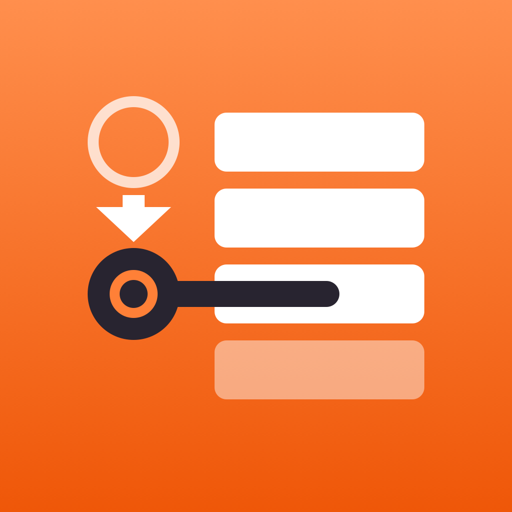

NEXT PINPrivacy Policy
Last updated October 22, 2026
The short version: Next Pin doesn't collect your personal data. Your workouts are stored on your iPhone, not on our servers. We don't use ads, analytics or tracking, and we don't sell or share anything about you.
What the app stores
Next Pin stores the workouts, exercises, sets, weights and settings you enter. This information is kept only on your device in the app's own storage. We do not receive a copy of it. If you delete the app, this data is deleted from your device.
What we collect
Nothing. Next Pin has no account sign-up, and the app does not send your workout data, contact details, location, health data or device identifiers to us or to anyone else.
Permissions the app asks for
- Add to Photos: only when you choose to save a workout card image. The app can add images to your library; it cannot read your photos.
- Live Activities: to show your current set and rest timer on your Lock Screen, in the Dynamic Island and on Apple Watch. This information stays on your devices.
You can change these permissions at any time in the iPhone Settings app.
Sharing
When you tap Share, you choose where a workout image goes (for example Instagram, TikTok or Messages). What happens to it after that is governed by that service's own privacy policy. Next Pin doesn't share anything unless you do.
Apple
Apple may provide us with anonymous crash reports and app usage statistics if you have agreed to share them with app developers in your iPhone settings. These are handled under Apple's Privacy Policy and don't identify you to us.
Children
Next Pin is not directed at children under 13, and we do not knowingly collect information from anyone, including children.
Changes
If this policy changes, we'll update this page and the date above. If we ever start collecting data, we'll tell you in the app before it happens.
Contact
Questions? Email support@getnextpin.com.